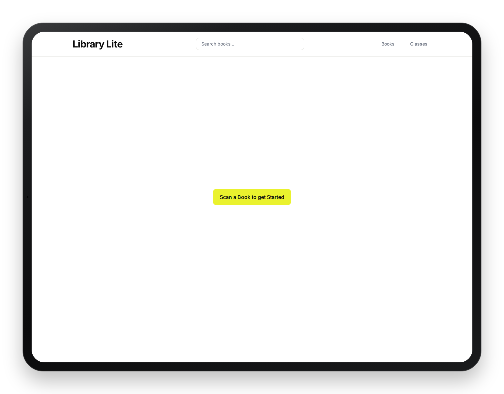
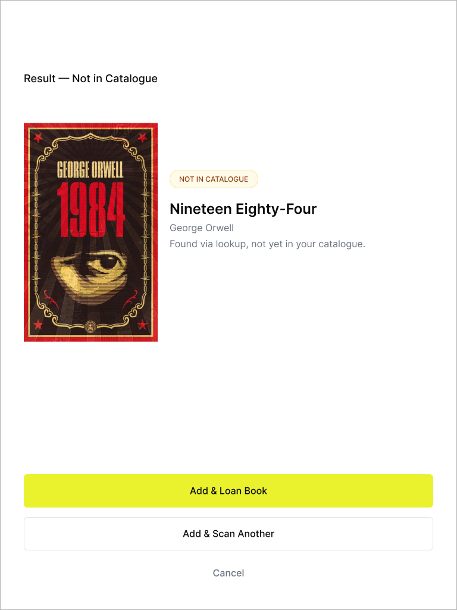
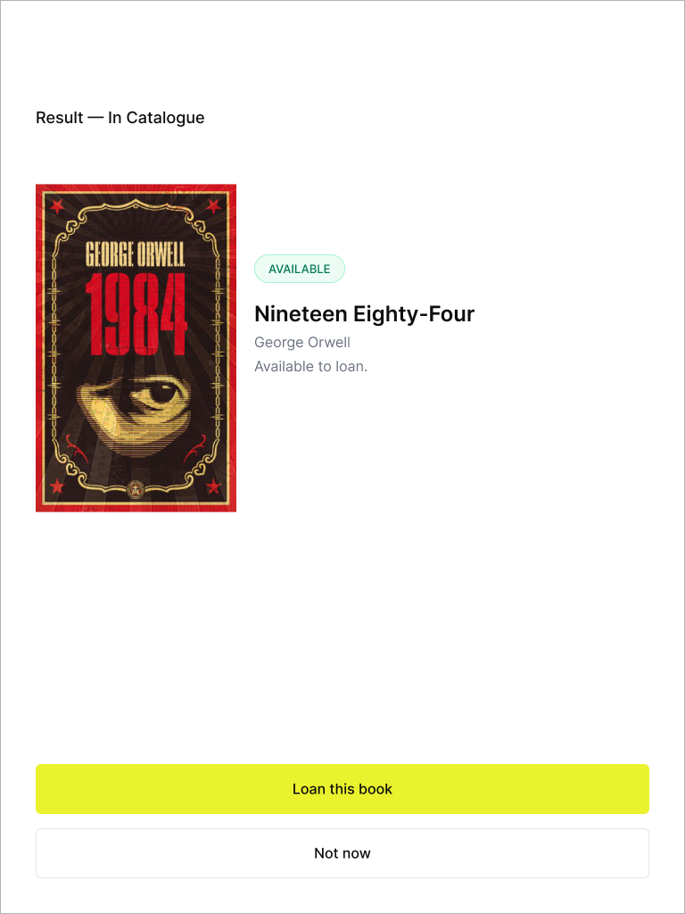
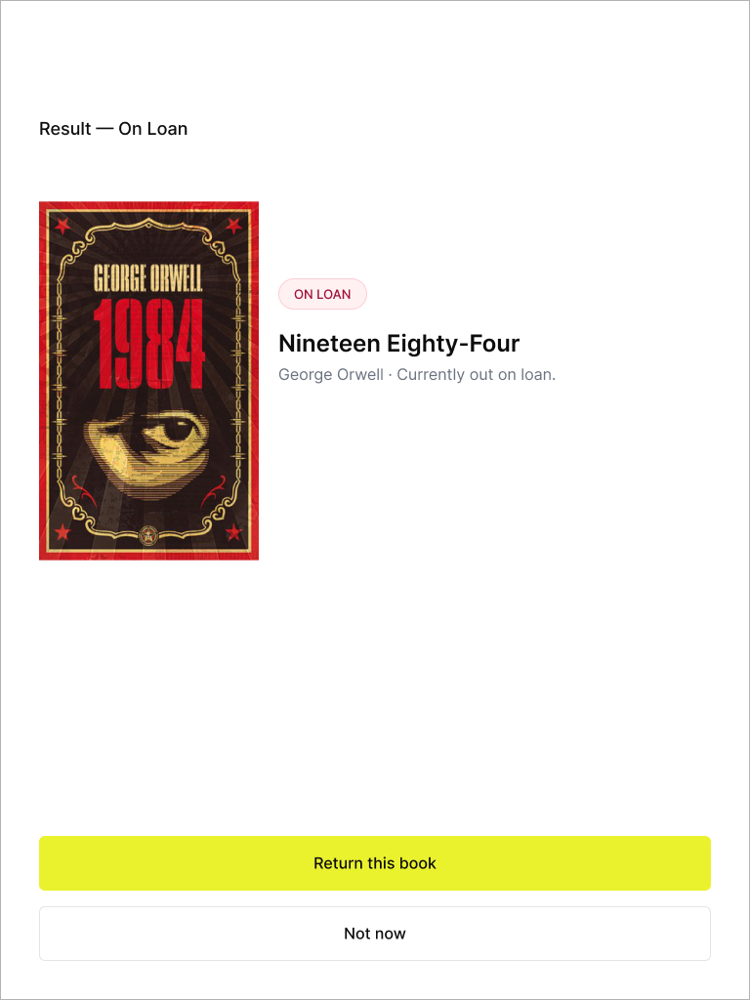

Library Lite
A fast, scan-first library management app designed for the reality of a busy school.
June 2026
- Role
- Product Designer
- Context
- Personal Project
- Focus
- Streamlined & Clear
- Tools
- Figma, Claude Code, Supabase & Github

01 — The Problem
Legacy Software vs. a Room Full of Kids
Teachers choose one of two options: the overcomplicated legacy library software, or a scrap piece of paper. Neither choice is ideal for the busy primary school library.
The piece of paper gets lost, a child claims to have already returned the book (and it wasn't written down), the laptop in the library takes ages to start up, and the legacy software is overcomplicated and not worth your time.
02 — The Solution
Scan First
The solution came down to a simple flow diagram. Scan the Book first. Depending on the state of the book, the app would offer next steps.
Scan Flow
Not in catalogue
Unknown Book
Add to system?
Add
Skip
Ready to borrow
Available
Select student & class
Confirm Checkout
Currently on loan
Checked Out
Return to Shelf
Flag overdue
The three states cover each possible scenario.
- —Unknown book — the app flags it immediately and asks if you want to add it.
- —Available — it drops you straight into checkout.
- —Already on loan — it tells you who has it and gives you a one-tap return.
The Actual Screens



03 — The Journey
Reality-Checking the Prototype
Two predominant stakeholders were used in testing — teachers and the volunteer librarian.
The volunteer librarian's main concern was loss of books because of inefficient management by teachers or children — either books not being properly loaned out and recorded, or children returning books without the teacher's knowledge. The librarian would always do a year-end book audit to catch what had gone missing.
Teachers needed a system that was straightforward and effective:
- —A weekly report of who had books overdue, so they could chase them up.
- —Symbolic, colour-coded visuals for overdue books — overdue books were marked red.
- —The ability to manage pupils themselves, particularly at the end of the year when children moved up a year group.
The app also needed to meet GDPR and child safety concerns:
- —The system is a closed app, only available within the school.
- —First names for pupils, with initials only if required (two Steves in a class, for example).
- —The app times out and requires logging in again after a period of inactivity.